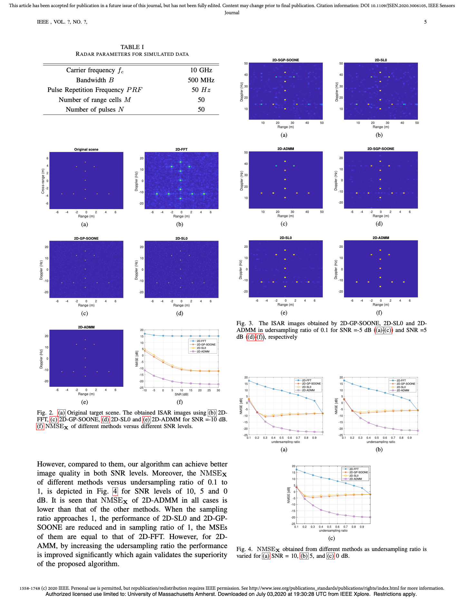
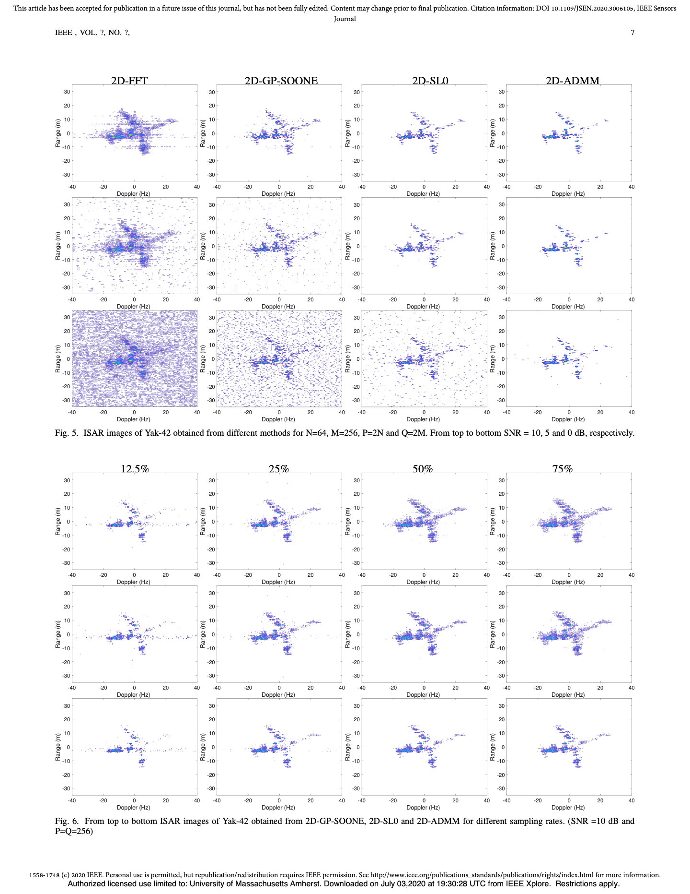

先理解：什么是 ISAR 成像
普通相机接收可见光，雷达则主动发射电磁波，再记录目标反射回来的信号。ISAR 的目标，是把这些回波计算成一张二维反射强度图。
距离向
根据回波到达时间和频率信息，判断散射点离雷达多远。雷达带宽越大，通常越容易区分相邻的距离。
横向或方位向
利用目标转动带来的多普勒差异，判断散射点在左右方向的位置。观测时间和角度变化决定这一方向的分辨能力。
ISAR 图像不是普通照片。亮点表示雷达反射较强的位置，点的排列大致反映目标结构。
传统方法：对回波做二维 FFT
常见的距离-多普勒方法主要通过二维 FFT，把“频率 × 时间”的回波矩阵转换成“距离 × 横向位置”的图像。 它速度快、实现简单，是理解后续方法的基准。
优点
计算快，流程成熟，数据质量好、采样充分时可以得到稳定结果。
局限
分辨率受到带宽和观测时间限制；数据不足、噪声较强时，背景会出现旁瓣、杂点和模糊。
新的想法：飞机图像其实很“稀疏”
飞机占据整个成像区域的一小部分，而且真正产生强回波的通常只是机头、机翼边缘、发动机等少量位置。 因此，在一张很大的图像中，大多数像素接近零，只有少数像素明显非零。
不是说飞机结构简单，而是说在选定的像素网格上，真正需要保留的强散射系数数量相对较少。
于是成像问题可以改写成：从所有可能图像中，寻找一张同时满足两个条件的图像。
| 要求 | 通俗解释 | 如果只考虑这一项 |
|---|---|---|
| 符合回波 | 用这张图预测出的雷达回波，应当接近真实测量。 | 可能把噪声也解释成目标细节。 |
| 图像稀疏 | 尽量只保留少量可信的强散射点。 | 可能删除真实但较弱的反射。 |
作者真正改进的是计算方式
压缩感知 ISAR 和 ADMM 都不是这篇论文首次提出的。论文的关键贡献，是让 ADMM 直接处理二维图像矩阵，不再把二维问题强行展开成一个巨型一维问题。
旧方法为什么占内存
传统推导会把二维图像逐列拉成一个长向量，再建立一个矩阵，记录“每个图像像素如何影响每个回波测量值”。 这个矩阵由距离字典和方位字典做 Kronecker 积得到，尺寸增长非常快。
二维方法为什么省
作者保留图像的行列结构，分别处理距离方向和方位方向。两种写法描述的是同一个物理模型，二维写法却不需要构造大矩阵。
一维思路
把整张二维表拉成一行，再用一个巨大的转换矩阵一次性描述所有关系。
二维思路
保留二维表格，分别从左侧和右侧处理两个方向，避免重复存储可分离结构。
论文中的 1D-ADMM 和 2D-ADMM 理论上解决同一个优化问题；二维版本主要减少内存和运算，并不凭空增加雷达获得的信息。
ADMM 每一轮在做什么
“符合回波”和“图像稀疏”是两个不同要求。ADMM 的做法是把它们分开处理，再不断协调，直到两边给出的图像基本一致。
根据回波修正图像
检查当前图像预测出的回波与真实回波有多大差异，然后修正图像。
压缩较小的像素
执行软阈值：小系数压成零，大系数适当缩小，让图像变得稀疏。
记录两者的分歧
累计“数据解”和“稀疏解”的差异，下一轮据此继续协调。
通常第一步需要解一个很大的线性方程。作者利用部分傅里叶矩阵的正交性和 Woodbury 恒等式， 把它化简成左右两侧的傅里叶运算；规则采样时还能用 FFT/IFFT 加速。
FFT 加速依赖代码中的规则傅里叶字典结构。如果换成任意观测矩阵，不能只根据矩阵尺寸直接使用快速版本。
论文声称得到了什么结果
作者用 11 个理想点目标和 Yak-42 实测数据做实验，并与 2D-FFT、2D-SL0、2D-GP-SOONE 比较。 在论文采用的参数下，2D-ADMM 的背景更干净，在低信噪比和欠采样条件下也更稳定。


- 计算方面：避免显式 Kronecker 大矩阵，减少内存和矩阵运算。
- 图像方面：利用稀疏正则压制背景噪声，突出少量强散射点。
- 数据方面：论文将公式推广到距离和方位同时欠采样的情况。
1D-ADMM 与 2D-ADMM 的目标相同，二维形式主要提高效率；相对于 FFT、SL0 等方法的图像改善，来自 ADMM 求解的 ℓ1 稀疏模型。
它没有解决完整的 ISAR 成像流程
论文关注的是“完成必要预处理后，怎样恢复稀疏图像”。它假设一部分困难问题已经被处理，因此不能把代码直接理解成从原始雷达数据到最终图像的完整系统。
- 目标平动已经补偿。
- 越距离单元走动已经校正。
- 目标在观测期间近似匀速转动，小转角近似成立。
- 相位误差没有纳入模型，论文也没有实现自动聚焦。
- 当前代码包没有完整实现论文中的二维欠采样 ADMM 公式。
最后用一句话概括
作者发现传统稀疏 ISAR 方法把二维图像拉直后会产生一个巨大矩阵，于是设计了直接在二维矩阵上运行的 ADMM， 让距离和方位两个方向分别计算，并利用 FFT 加速，从而用更少的内存恢复较干净的稀疏 ISAR 图像。